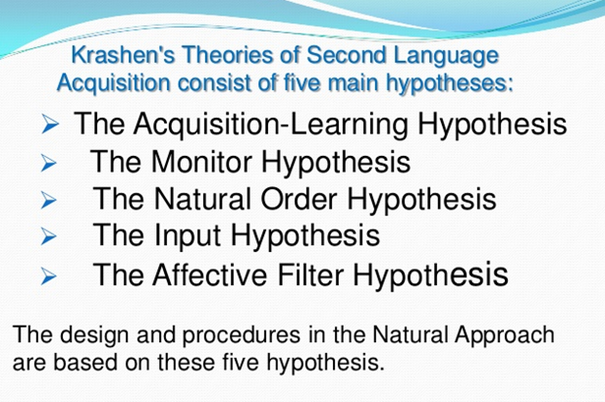

9 Entwicklungs- und transferbedingte Fehler
9.1 Ortegas Übersicht
Übersicht mit 10 L2-Theorien in Ortega(2015).
9.2 Kontrastive Zweitspracherwerbshypothese
Die kontrastive Zweitspracherwerbshypothese (KAH) besagt, dass die Schwierigkeiten beim Erwerb einer neuen (Zweit-)Sprache aus den Unterschieden zwischen der neuen Sprache und der Muttersprache (Erst-)Sprache eines Sprachbenutzers abgeleitet werden¹. Diese Hypothese wurde von Lado (1957) formuliert und basiert auf der Annahme, dass das Sprachlernen eine Frage der Gewohnheitsbildung ist, die durch bestehende Gewohnheiten verstärkt oder behindert werden kann. Daher hängt die Schwierigkeit, bestimmte Strukturen in einer Zweitsprache zu beherrschen, von der Differenz zwischen der Muttersprache und der Zielsprache ab.
Die kontrastive Analyse ist eine systematische Untersuchung eines Sprachenpaares mit dem Ziel, ihre strukturellen Unterschiede und Ähnlichkeiten zu identifizieren. Sie wurde in den 1960er und 1970er Jahren intensiv im Bereich des Zweitspracherwerbs eingesetzt, um zu erklären, warum einige Merkmale einer Zielsprache schwerer zu erwerben sind als andere. Sie wurde auch als Methode zur Erstellung von Sprachkursen und zur Sprachlehrerausbildung verwendet.
Die kontrastive Analyse wurde jedoch auch kritisiert, da sie nicht alle Lernschwierigkeiten vorhersagen konnte und eine zu starke Trennung zwischen Erwerb und Lernen annahm, die nicht bewiesen wurde.
Quellen (Bing, 10. 5. 2023):
(1) Contrastive Analysis and Native Language Identification - ACL Anthology. https://bing.com/search?q=contrastive+second+language+acquisition+hypothesis Dostopano 10. 5. 2023.
(2) Contrastive analysis - Wikipedia. https://en.wikipedia.org/wiki/Contrastive_analysis Dostopano 10. 5. 2023.
(3) Contrastive Analysis Hypothesis and Second Language Learning. https://www.researchgate.net/publication/333024861_Contrastive_Analysis_Hypothesis_and_Second_Language_Learning Dostopano 10. 5. 2023.
(4) Contrastive Analysis In The Second Language Acquisition. https://www.123helpme.com/essay/Contrastive-Analysis-In-The-Second-Language-Acquisition-517378 Dostopano 10. 5. 2023.
(5) What Is Contrastive Analysis? (with picture) - Language Humanities. https://www.languagehumanities.org/what-is-contrastive-analysis.htm Dostopano 10. 5. 2023.
(6) Contrastive Analysis and Native Language Identification - ACL Anthology. https://aclanthology.org/U09-1008.pdf Dostopano 10. 5. 2023.
9.3 Krashens Ansatz

Stephen Krashen hat fünf Hauptthesen zum Zweitspracherwerb aufgestellt, die folgendes besagen:
- Die Erwerb-Lernen-Hypothese unterscheidet zwischen dem unbewussten Erwerb und dem bewussten Lernen einer Sprache. Erwerb ist ähnlich wie bei einem Kind, das seine Muttersprache aufnimmt, während Lernen das Entdecken und Lernen von Regeln und grammatischen Strukturen der Sprache beinhaltet.
- Die Monitor-Hypothese besagt, dass der Lerner die Grammatikregeln und Funktionen einer Sprache bewusst lernt, anstatt sich auf die Bedeutung zu konzentrieren. Diese Theorie legt mehr Wert auf die Korrektheit der Sprache. Um die Monitor-Hypothese richtig anzuwenden, müssen drei Bedingungen erfüllt sein: Der Erwerber muss die Regeln der Sprache kennen, sich auf die genaue Form der Sprache konzentrieren und sich Zeit nehmen, um die Sprachregeln in einem Gespräch zu überprüfen und anzuwenden.
- Die Natürliche-Ordnung-Hypothese basiert auf dem Befund, dass Sprachlerner grammatische Strukturen in einer festen und universellen Weise erlernen. Es gibt einen Sinn für Vorhersagbarkeit für diese Art des Lernens, die ähnlich ist wie bei einem Sprecher, der seine Muttersprache lernt.
- Die Input-Hypothese legt mehr Wert auf den Erwerb der Zweitsprache. Diese Theorie ist mehr daran interessiert, wie die Sprache erworben wird als gelernt. Außerdem besagt die Input-Hypothese, dass der Lerner die Sprache natürlich entwickelt, sobald er interessante und lustige Informationen erhält.
- Die Affektive-Filter-Hypothese besagt, dass die Fähigkeit des Lerners, eine Sprache zu erwerben, eingeschränkt ist, wenn er negative Emotionen wie Angst oder Verlegenheit erlebt. In solchen Fällen ist der affektive Filter “hoch” eingestellt.
Quellen (Bing, 10. 5. 2023):
(1) Stephen Krashen and Second Language Acquisition - UKEssays.com. https://bing.com/search?q=Stephen+Krashen+second+language+acquisition+five+hypotheses Dostopano 10. 5. 2023. (2) Stephen Krashen’s Five Hypotheses of Second Language Acquisition. https://beelinguapp.com/blog/stephen-krashens-five-hypotheses Dostopano 10. 5. 2023. (3) Input hypothesis - Wikipedia. https://en.wikipedia.org/wiki/Input_hypothesis Dostopano 10. 5. 2023. (4) Stephen Krashen and Second Language Acquisition - UKEssays.com. https://www.ukessays.com/essays/linguistics/stephen-krashen-and-second-language-acquisition.php Dostopano 10. 5. 2023. (5) Krashen’s Second Language Acquisition Theory. https://krashenstheory.home.blog/ Dostopano 10. 5. 2023. (6) An Overview of Stephen Krashen’s Theories of Second Language …. https://www.teflcourse.net/blog/an-overview-of-stephen-krashens-theories-of-second-language-acquisition-ittt-tefl-blog/ Dostopano 10. 5. 2023.
9.4 Dulay, Burt & Krashen (1982)
Auszug aus dem Lehrbuch von Dulay, Burt & Krashen (1982):
Während der letzten drei Jahrzehnte haben Forscher einige wichtige Eigenschaften des Spracherwerbs aufgedeckt (vgl. Dulay, Burt, Krashen 1982: 3-12):
Man entdeckte zum Beispiel, dass Kinder und Erwachsene eine stille Vorbereitungsphase von ein paar Wochen bis zu einigen Monaten durchmachen, wenn sie nicht zum Sprechen in einer für sie neuen Sprache gezwungen werden. Diese stille Vorbereitungsphase (comprehension period) scheint das Sprechenlernen zu beschleunigen. Die meisten Zweitsprachkurse verlangen jedoch, daß die Lerner vom ersten Tag an Sätze in der neuen Sprache produzieren und üben. Es scheint so, als wäre es besser, ein wenig zu warten, bis die Lerner dazu bereit sind.
Die günstigste Spracherwerbsumgebung scheint diejenige zu sein, in der Sprache für natürliche Kommunikation verwendet wird, d.h. als Verkehrssprache. Während bestimmte sprachliche Aspekte durchaus bewußtes Lernen notwendig machen, sind sprachliche Grundkenntnisse am besten in solchen Situationen zu erwerben, in denen der Lerner sich auf das Verständnis oder den Ausdruck von Ideen, Nachrichten oder anderen Gedanken in der neuen Sprache konzentrieren kann. Mechanische Drills und das Auswendiglernen von Dialogen scheinen die Entwicklung von kommunikationsrelevanten Konversationsfertigkeiten nur wenig zu fördern.
Manchmal allerdings mag es vorkommen, dass manche Lerner trotz der Tatsache, dass ihre Lehrer eine natürliche Spracherwerbsumgebung (natural language environment) zu schaffen versuchen und eine stille Vorbereitungsphase zulassen, nicht das erwerben, was in der Lektion präsentiert wurde. Außerdem ist es möglich, daß Lerner sogar solche sprachliche Strukturen korrekt verwenden, die vom Lehrer gar nicht eingeführt wurden. Spracherwerbsforscher vermuten nun, daß einige interne Faktoren für diese unerwarteten Reaktionen verantwortlich sind.
Wenn ein Lerner einer neuen Sprache ausgesetzt ist, stellen die individuellen emotionellen Zustände und individuelle Beweggründe (Motivation) eine erste (potentielle) Hürde im Aneignungsprozess dar. Man erkannte, dass Lerner, bewußt oder unbewußt, beim Spracherwerb nur ganz bestimmte Personentypen als Vorbild annehmen und nachzuahmen bereit sind. Wenn jemand beispielsweise das Vorurteil hegt, österreichisches Deutsch sei minderwertig, ist es wahrscheinlich, dass diese Person von Österreichern nicht so viel Deutsch lernt wie eine Person, die das österreichische Deutsch für die beste deutsche Sprachvarietät hält. Andere Filterquellen sind die individuellen Angstzustände (anxiety levels), die Identifizierung mit Vorbildern (peer identification) und generelle Beweggründe, eine neue Sprache zu erlernen. Dulay/Burt/Krashen (1982) nennen diese Quellen den affektiven Filter oder einfach nur Filter. Der Filter kontrolliert die Eingabe für weitere mentale Prozeduren bei der Sprachtätigkeit.
Sobald Sprache den Filter passiert hat, gelangt sie zu anderen Sprachprozessoren. Nach dem Modell von Dulay/Burt/Krashen (1982) sind dies der Organisator (Organizer) und der Monitor (monitor). Wenn das menschliche Gehirn Teile der Zweitsprache beginnt in sich aufzunehmen, organisiert es die Zweitsprache auf eine Art und Weise, die (a) von der allgemeinen Reihenfolge, nach der grammatische Strukturen überhaupt gelernt werden, (b) von den gemachten systematischen Fehlern und (c) den Interim-Konstruktionen (Übergangskonstruktionen) von Lernern abhängen. Die Organisation der Zweitsprache reflektiert nicht notwendigerweise die Organisation des Lehrplanes in der Schule. Außerdem scheint die Zweitsprache bei den meisten Lernern ähnlich organisiert zu sein, und zwar ohne Rücksicht darauf, welche Sprache die Erstsprache ist.
Der Monitor (d.h der interne Beobachtungsprozess) hat die Funktion der Selbstberichtigung. Personen, die sehr um die Form ihrer sprachlichen Produkte besorgt sind, wenden bewußt Regeln zur Satzproduktion an. Personen hingegen, die einen starken Wunsch nach Verständigung haben und die eigene sprachliche Fehler nicht in Verlegenheit bringen, gebrauchen den Monitor seltener als befangene, gehemmte Personen.
Die drei Sprachprozessoren sind von Persönlichkeitszügen und Alter des Lerners abhängig, denn von diesen Faktoren wird ihre Aktivität gehemmt oder gefördert. Zum Beispiel kann ein extrovertierter Lerner weniger Zweitsprache ausfiltern als ein Lerner mit weniger Selbstvertrauen, oder ein Erwachsener vermag einen größeren Zweitsprachenausschnitt auf einmal zu organisieren als ein kleines Kind.
Die möglicherweise überraschenste Erkenntnis in der Zweitsprachenerwerbsforschung betrifft die Fehler, die von Lernern gemacht werden. Mehrere Jahrzehnte wurde von Linguisten und Lehrern vermutet, daß die meisten Fehler, die von Zweitsprachenlernern gemacht werden, ihren Grund in den Unterschieden zwischen Erstsprache und Zweitsprache haben. Dies war auch die Grundlage für die lange Zeit bevorzugte Theorie der konstrastiven Analyse (contrastive analysis theory, CA theory). Nun haben die Forscher erkannt, daß die Erstsprache ein weitaus geringeren Einfluß auf die Zweitsprachensyntax ausübt, als man vorher geglaubt hatte. Die Aussagen über die Stärke des erstsprachlichen Einflusses sind allerdings recht verschieden. Einige Studien zeigen zum Beispiel, daß nur 5% aller grammatischen Fehler, die von Kindern gemacht werden, und höchstens 20% der Fehler, die von erwachsenen Lernern gemacht werden, von der Erstsprache herrühren. Andere Untersuchungen legen allerdings nahe, dass der Einfluss der Erstsprache weit größer ist, so dass der durch Interferenz zustande gekommene Fehleranteil sogar bei mehr als 50% der grammatischen Fehler liegen soll. In der Zweitspracherwerbstheorie wird allerdings heutzutage nicht mehr angenommen, dass Interferenzen zwischen Erst- und Zweitsprache notwendigerweise eine Lernschwierigkeit heraufbeschwören. Einige Forscher waren zeitweise sogar der Meinung, es sei nicht mehr notwendig, dass Lehrer spezielle Grammatiklektionen für ihre Schüler und Studenten mit Rücksicht auf deren Erstsprache vorbereiten. Heutzutage ist bekannt, dass Interferenz in den verschiedenen sprachlichen Bereichen eine mehr oder weniger starke Wirkung entfaltet. So ist die Aussprache in wesentlich stärkerem Maße von der Erstsprache abhängig als andere Bereiche der Grammatik (Morphologie, Syntax, Semantik). In der gegenwärtigen Theorie wird die Vielzahl der wirkenden Faktoren hervorgehoben, die den Spracherwerb steuern, und deren kombinierte Wirkungsweise eingehend untersucht.
Eine weitere überraschende Entdeckung war, daß die Korrektur der grammatischen Fehler von Lernern nur geringe Fortschritte zu zeitigen schien. Korrekturen können zwar anderen wichtigen Zwecken dienen, wie z.B. den Lernern und deren Eltern den Eindruck zu vermitteln, daß der Lehrer bemüht ist, sich seinen Lohnscheck zu verdienen, oder daß der Lehrer versucht, eine Vergleichsbasis für die Notengebung zu schaffen. Nach der Ansicht der L2-Forschung ist es allerdings nicht notwendig, daß der Lehrer aus Angst davor, dass ein Fehler zur Gewohnheit wird, den Lerner auf jeden einzelnen Fehler aufmerksam macht.
Wie bereits zuvor erwähnt wurde, haben L2-Forscher entdeckt, daß die meisten Personen ohne Rücksicht darauf, ob ihre Erstsprache nun Hindi, Französisch oder Englisch ist, eine Arbeitshypothese (working knowledge) über bestimmte sprachliche Strukturen in der Zweitsprache (z.B. Englisch) in einer relativ unveränderlichen Reihenfolge entwickelt. Diese natürliche Erwerbsreihenfolge ist zu beobachten, auch wenn die Reihenfolge, in der sprachliche Strukturen während des Unterrichts eingeführt werden, variiert.
Linguisten haben außerdem festgestellt, dass Zweitsprachenlerner mit verschiedenen Erstsprachen, ob nun Kinder oder Erwachsene, komplexe Strukturen (wie z.B. Fragen im Englischen oder Deutschen) erlernen, indem sie Übergangskonstruktionen oder Interimskonstruktionen (transitional constructions) für diese Strukturen verwenden (z.B. im Englischen von Who that? über Who that is? zur endgültigen Who’s that?; ins Deutsche übertragen: “Wer das? - Wer das ist? - Wer ist das?”). Diese Übergangskonstruktionen sind vorhersagbar und werden von den meisten L2-Lernern ohne Rücksicht auf ihre Erstsprachenherkunft gebraucht.
Die festgestellte Reihenfolge von sprachlichen Strukturen kann allerdings durch die Tatsache gestört werden, dass Menschen, die in einer fremden Sprache zu agieren haben, häufig mit einigen nützlichen Phrasen beginnen, die das Leben leichter machen. Im Englischen etwa: Pass the salt, please (“Reiche das Salz herüber, bitte”); What’s that (“Was ist das?”); It’s my turn (“Es ist mein Zug” - “Ich bin dran”). Sowohl Kinder als auch Erwachsene lernen solche Phrasen, die man Muster und Routinen nennt, zu gebrauchen.
Zusammenfassung.
Es gibt mehrere Merkmale, die für das Verständnis des Zweitsprachenerwerbs wesentlich sind: die sprachliche Umgebung, die Kontrolle des Lerners über den Lernprozeß, die Sprache, die von Lernern produziert wird. Sie alle gehören zum Lern- und Lehrprozeß.
9.5 Eckmans MDH (1977)
Die Markedness Differential Hypothesis von Fred Eckman besagt, dass die Schwierigkeiten beim Erwerb einer Zweitsprache (L2) von den Unterschieden in der Markiertheit zwischen der Muttersprache (L1) und der L2 abhängen.
Markiertheit ist ein Konzept, das sich auf die relative Komplexität oder Seltenheit eines sprachlichen Merkmals bezieht. Im Allgemeinen gilt ein Merkmal als markiert, wenn es mehr Einschränkungen oder Bedingungen für seinen Gebrauch hat als ein alternatives Merkmal¹. Die Markedness Differential Hypothesis wurde 1977 von Eckman formuliert und basiert auf der Annahme, dass das Sprachlernen eine Frage der Gewohnheitsbildung ist, die durch bestehende Gewohnheiten verstärkt oder behindert werden kann².
Ein ähnliches Konzept ist Natürlichkeit (vgl. die Natürlichkeitstheoretische Differenzhypothese von Schmid 1997).
Die Markedness Differential Hypothesis macht folgende Vorhersagen:
- Die Bereiche der L2, die sich von der L1 unterscheiden und markierter sind als die L1, werden schwierig sein.
- Der relative Schwierigkeitsgrad der Unterschiedsbereiche der L2, die markierter sind als die L1, wird dem relativen Markiertheitsgrad entsprechen.
- Die Bereiche der L2, die sich von der L1 unterscheiden, aber nicht markierter sind als die L1, werden nicht schwierig sein².
Die Markedness Differential Hypothesis wurde angewendet, um verschiedene Aspekte des Zweitspracherwerbs zu erklären, wie z.B. die Aussprache³, die Morphologie⁴ und die Syntax von L2-Lernern.
Quellen(Bing, 10. 5. 2023):
(1) (PDF) Typological markedness and second language phonology - ResearchGate. https://www.researchgate.net/publication/228352716_Typological_markedness_and_second_language_phonology Dostopano 10. 5. 2023.
(2) Markedness Differential Hypothesis (MDH) - Semantic Scholar. https://www.semanticscholar.org/paper/Markedness-Differential-Hypothesis-%28MDH%29-Eckman/51e38a7de8e7599801ffd8b0672461c30f3c8473 Dostopano 10. 5. 2023.
(3) Markedness and Syllabus Design in SLA - ScienceDirect. https://www.sciencedirect.com/science/article/pii/S1877042815017024 Dostopano 10. 5. 2023.
(4) 9780415877510 prelims 1.. https://cpb-us-w2.wpmucdn.com/sites.uwm.edu/dist/9/312/files/2016/10/Eckman_2012-23l27s6.pdf Dostopano 10. 5. 2023.
9.6 SLM(r) von James Flege (1995)
Der Ansatz zum Zweitspracherwerb von James Flege besagt, dass die Aussprache einer Zweitsprache (L2) von der Interaktion zwischen der Muttersprache (L1) und der L2 abhängt. Flege entwickelte das Speech Learning Model (SLM), das davon ausgeht, dass die phonetischen Systeme, die in der Produktion und Wahrnehmung von Vokalen und Konsonanten verwendet werden, sich über die Lebensspanne anpassen können². Das SLM erklärt, warum “früher besser” ist, wenn es darum geht, eine L2 auszusprechen, und wie verschiedene Faktoren wie Alter, Motivation und Sprachgebrauch die L2-Aussprache beeinflussen.
Das SLM unterscheidet zwischen dem Erwerb neuer L2-Sprachlaute und der Anpassung bestehender L1-Sprachlaute an die L2. Das SLM basiert auf der Annahme, dass L2-Lerner versuchen, die Sprachlaute ihrer L2 so zu kategorisieren, wie es Muttersprachler tun, und dass sie Schwierigkeiten haben, Sprachlaute zu erwerben, die ihrer L1 ähnlich sind³.
Das SLM wurde kürzlich als SLM-r revidiert, um einige Aspekte wie die Kategoriegenauigkeitshypothese und die Rolle des phonologischen Bewusstseins zu berücksichtigen⁴.
Quellen (Bing, 10. 5. 2023):
(1) James FLEGE | Professor Emeritus | PhD | University of Alabama at …. https://www.researchgate.net/profile/James-Flege Dostopano 10. 5. 2023.
(2) “Age” effects on second language acquisition - ResearchGate. https://www.researchgate.net/publication/353643811_Age_effects_on_second_language_acquisition Dostopano 10. 5. 2023.
(3) Second Language Speech: Learning Theory Findings and Problems. https://www.researchgate.net/profile/James-Flege/publication/333815781_Second_language_speech_learning_Theory_findings_and_problems/links/5d071d2692851c900442d6b2/Second-language-speech-learning-Theory-findings-and-problems.pdf Dostopano 10. 5. 2023.
(4) Second Language Speech: Learning Theory Findings and Problems. https://bing.com/search?q=James+Flege+second+language+acquisition Dostopano 10. 5. 2023.
Das Speech Learning Model revised (SLM-r) unterscheidet sich vom früheren Speech Learning Model (SLM) in einigen Aspekten:
- Das SLM-r ist ein individuelles Unterschiedsmodell, das darauf abzielt, zu verstehen, wie sich die phonetischen Systeme über die Lebensspanne hinweg an den phonetischen Input anpassen, der während des naturalistischen L2-Lernens empfangen wird¹. Das SLM war eher darauf ausgerichtet, altersbedingte Grenzen für die Fähigkeit zu erklären, L2-Sprachlaute in einer muttersprachlichen Weise auszusprechen².
- Das SLM-r schlägt vor, dass die Mechanismen und Prozesse, die für den Erwerb der Muttersprache (L1) erforderlich sind, über die Lebensspanne hinweg für das Lernen einer Zweitsprache (L2) zugänglich bleiben, ohne Veränderung oder Ausnahme¹. Das SLM ging davon aus, dass sich die Fähigkeit zur Sprachlauterwerbung mit dem Abschluss einer vermeintlichen kritischen Periode (CP) für das Sprachlernen verringert².
- Das SLM-r führt die Kategoriegenauigkeitshypothese ein, die besagt, dass die Bildung oder Nichtbildung neuer phonetischer Kategorien für L2-Sprachlaute von der Genauigkeit der L1-Kategorien zum Zeitpunkt des Beginns des L2-Lernens abhängt¹. Das SLM berücksichtigte nicht die Genauigkeit der L1-Kategorien als einen Faktor für den L2-Sprachlauterwerb².
- Das SLM-r betont die Rolle des phonologischen Bewusstseins für den L2-Sprachlauterwerb und schlägt vor, dass es sowohl eine Ursache als auch eine Folge des L2-Lernens sein kann¹. Das SLM erwähnte das phonologische Bewusstsein nicht explizit als einen relevanten Faktor².
Quellen (Bing, 10. 5. 2023):
(1) Chapter 1 - The Revised Speech Learning Model (SLM-r). https://www.cambridge.org/core/books/second-language-speech-learning/revised-speech-learning-model-slmr/7A720FCB65B653B00C766A436908B1A7 Dostopano 10. 5. 2023.
(2) The Revised Speech Learning Model (SLM-r) - ResearchGate. https://www.researchgate.net/publication/349040711_The_Revised_Speech_Learning_Model_SLM-r Dostopano 10. 5. 2023.
(3) The revised Speech Learning Model (SLM-r) - Aarhus University. https://pure.au.dk/portal/en/publications/the-revised-speech-learning-model-slmr%28950aa1cb-2b07-45cb-863d-3051665b8b50%29.html Dostopano 10. 5. 2023.
9.7 PAM-L2 von Best & Taylor (2007)
Der PAM-L2-Ansatz von Best und Taylor (2007) besagt über den Zweitspracherwerb, dass die Wahrnehmung und Produktion von L2-Sprachlauten von der Interaktion zwischen der Muttersprache (L1) und der Zweitsprache (L2) abhängt. PAM-L2 ist eine Erweiterung des Perceptual Assimilation Model (PAM) von Best (1995), das davon ausgeht, dass nicht-muttersprachliche Sprachlaute entsprechend ihrer Distanz zu den artikulatorischen Eigenschaften der muttersprachlichen Sprachlaute wahrgenommen werden.
Die spezifischen L2-Sprachlaute werden zu bereits existierenden phonemischen Kategorien assimiliert, die während des Mutterspracherwerbs gebildet wurden¹. PAM-L2 nimmt an, dass die Sprachlernmechanismen des kindlichen L1-Erwerbs über die Lebensspanne hinweg zugänglich bleiben. Außerdem schlägt PAM-L2 vor, dass die Bildung oder Nichtbildung neuer phonetischer Kategorien für L2-Sprachlaute von der wahrgenommenen phonetischen Ähnlichkeit oder Unterschiedlichkeit zwischen einem L2-Sprachlaut und dem nächstgelegenen L1-Sprachlaut abhängt². PAM-L2 unterscheidet zwischen drei möglichen Assimilationstypen:
- Zwei-Kategorie-Assimilation (TCA),
- Kategorie-Güte-Assimilation (CGA)
- und Nicht-Kategorie-Assimilation (NCA).
TCA tritt auf, wenn ein L2-Sprachlaut als ein anderer L1-Sprachlaut wahrgenommen wird. CGA tritt auf, wenn ein L2-Sprachlaut als eine Variante eines L1-Sprachlautes wahrgenommen wird. NCA tritt auf, wenn ein L2-Sprachlaut als keinem L1-Sprachlaut ähnlich wahrgenommen wird³.
PAM-L2 macht Vorhersagen darüber, wie gut oder schlecht L2-Lerner einen L2-Sprachlaut wahrnehmen und produzieren können, je nachdem, welcher Assimilationstyp vorliegt. Im Allgemeinen wird erwartet, dass NCA zu einer besseren Wahrnehmung und Produktion führt als TCA oder CGA⁴.
Quellen(Bing, 10. 5. 2023):
(1) Neuroplasticity in the phonological system: The PMN and the N400 as …. https://pure.mpg.de/pubman/item/item_3322918_1/component/file_3322919/Heidlmayr_etal_2021_Neuroplasticty%20in%20the%20phonological%20system.pdf Dostopano 10. 5. 2023.
(2) PAM-L2 and phonological category acquisition in the foreign language …. https://www.researchgate.net/publication/333124848_PAM-L2_and_phonological_category_acquisition_in_the_foreign_language_classroom Dostopano 10. 5. 2023.
(3) Toward a new model for speech perception: the Universal Perceptual …. https://link.springer.com/article/10.1007/s10339-021-01017-6 Dostopano 10. 5. 2023.
(4) Second language learners’ vocabulary expansion is associated with …. https://www.researchgate.net/profile/Rikke-Bundgaard-Nielsen-2/publication/259423497_Second_language_learners’_vocabulary_expansion_is_associated_with_improved_second_language_vowel_intelligibility/links/60f4df26fb568a7098bd215d/Second-language-learners-vocabulary-expansion-is-associated-with-improved-second-language-vowel-intelligibility.pdf Dostopano 10. 5. 2023.
9.8 Selbstorganisation
Das konstruktivistische Modell der Selbstorganisation von Zangl und anderen Vertretern besagt über den Zweitspracherwerbsprozess, dass die Entwicklung einer Zweitsprache (L2) von den dynamischen Interaktionen zwischen dem Lerner, der Umgebung und der L2 abhängt.
Das konstruktivistische Modell der Selbstorganisation ist eine Theorie des Zweitspracherwerbs, die auf den Prinzipien der Komplexitätstheorie und des dynamischen Systemansatzes basiert. Diese Theorie nimmt an, dass die L2 ein komplexes adaptives System ist, das sich ständig verändert und anpasst, um sich an die Anforderungen der Kommunikation anzupassen. Die L2 ist nicht nur das Ergebnis von internen kognitiven Prozessen, sondern auch von externen sozialen Faktoren, die die Lernsituation beeinflussen. Die L2 ist daher nicht linear oder vorhersagbar, sondern chaotisch und emergent¹.
Das konstruktivistische Modell der Selbstorganisation schlägt vor, dass die L2-Lerner ihre eigene L2-Kompetenz durch aktive Beteiligung an authentischen und bedeutungsvollen Kommunikationsaktivitäten konstruieren. Die L2-Lerner nutzen ihre vorhandenen Ressourcen und Strategien, um mit neuen sprachlichen Herausforderungen umzugehen und ihr L2-System zu erweitern und zu reorganisieren. Die L2-Lerner sind daher keine passiven Empfänger von sprachlichem Input, sondern aktive Gestalter ihrer eigenen L2-Entwicklung².
Das konstruktivistische Modell der Selbstorganisation betont die Rolle des sozialen Kontextes und der Interaktion für den Zweitspracherwerb. Die L2-Lerner interagieren nicht nur mit anderen Sprechern der L2, sondern auch mit verschiedenen Artefakten und Medien, die die L2 vermitteln. Diese Interaktionen bieten den Lernern Möglichkeiten zum Sprachgebrauch, zum Feedback, zur Reflexion und zur Neubewertung ihrer eigenen L2-Leistung. Die Interaktionen sind auch von verschiedenen Faktoren wie Motivation, Emotionen, Einstellungen und Identitäten geprägt, die die L2-Entwicklung beeinflussen können³.
Quellen(Bing, 10. 5. 2023):
(1) THE DEVELOPMENT OF SELF-DETERMINATION ACROSS THE LANGUAGE COURSE …. https://www.cambridge.org/core/journals/studies-in-second-language-acquisition/article/abs/development-of-selfdetermination-across-the-language-course/183DC3D831E394C0A3BFE35D79D382A9 Dostopano 10. 5. 2023.
(2) Second Language Acquisition - Cambridge Core. https://www.cambridge.org/core/publications/elements/second-language-acquisition Dostopano 10. 5. 2023.
(3) (PDF) Vygotsky and Second Language Acquisition - ResearchGate. https://www.researchgate.net/publication/342196944_Vygotsky_and_Second_Language_Acquisition Dostopano 10. 5. 2023.
9.9 Processibility theory
Die Processability theory von Pienemann besagt über den Zweitspracherwerbsprozess, dass die Entwicklung einer Zweitsprache (L2) von den psycholinguistischen Verarbeitungsmechanismen abhängt, die der Lerner zur Verfügung hat. Die Processability theory (PT) ist eine kognitive Theorie des Zweitspracherwerbs, die auf Levelts (1989) Modell der Sprachproduktion basiert und formal mit der Lexical-Functional Grammar (Bresnan 2001) operationalisiert wird. PT nimmt an, dass die Lerner nur das produzieren können, was sie verarbeiten können. PT basiert daher auf der hierarchischen Architektur der Sprachproduktion, die aus verschiedenen Verarbeitungsstufen besteht. Es wird argumentiert, dass die Lerner gezwungen sind, dieser hierarchischen Verarbeitungsordnung zu folgen, wenn sie eine Zielsprache erwerben. Mit anderen Worten, die Verarbeitungshierarchie ist der Kern der Vorhersagemaschinerie, die in PT enthalten ist.
Natürlich muss die Hierarchie auf die spezifischen Bedingungen einer Zielsprache angewendet werden. Dies geschieht mit Hilfe von LFG-Formalismen. Wenn PT auf Englisch als Zweitsprache angewendet wird, ergibt sich eine Reihe von Vorhersagen für Entwicklungspläne in Syntax und Morphologie. Zum Beispiel wird vorhergesagt, dass die Wortstellung zunächst auf kanonische Wortstellung beschränkt ist, auch in Fragen, da Do-Unterstützung und Hilfsinversion Verarbeitungsressourcen erfordern würden, die anfangs nicht verfügbar sind. PT umfasst auch theoretische Module, die sich mit L1-Transfer, inter-Lerner-Variation und der Rolle der linguistischen Typologie befassen. Es kommt mit detaillierten methodischen Werkzeugen. PT wurde auf den Zweitsprachunterricht und auf das linguistische Profiling angewendet¹.
Quellen (Bing, 10. 5. 2023):
(1) Pienemann’s Teachability Hypothesis and Processability Theory … - CORE. https://bing.com/search?q=Processability+theory+Pienemann+second+language+acquisition Dostopano 10. 5. 2023.
(2) Processability theory - Wikipedia. https://en.wikipedia.org/wiki/Processability_theory Dostopano 10. 5. 2023.
(3) Processability Theory | 14 | v2 | Theories in Second Language Acquisit. https://www.taylorfrancis.com/chapters/edit/10.4324/9780203628942-14/processability-theory-manfred-pienemann-anke-lenzing Dostopano 10. 5. 2023.
(4) Pienemann’s Teachability Hypothesis and Processability Theory … - CORE. https://core.ac.uk/download/pdf/270257710.pdf Dostopano 10. 5. 2023.
(5) (PDF) Manfred Pienemann’s Pocessability Theory - ResearchGate. https://www.researchgate.net/publication/318307760_Manfred_Pienemann’s_Pocessability_Theory Dostopano 10. 5. 2023.
9.10 Kormos 2014
Auszüge aus dem Buch von Kormos (2014) (L2-Speech production model): Übersetzt mit www.DeepL.com/Translator (kostenlose Version), Korrekturen T.P.
9.10.1 AUF DEM WEG ZU EINEM INTEGRIERTEN MODELL DER L2-Sprachproduktion
In diesem abschließenden Kapitel entwerfe ich ein umfassendes Modell der L2-Sprachproduktion, das sowohl mit aktuellen Theorien der Sprachverarbeitung übereinstimmt als auch die in den vorangegangenen Kapiteln beschriebenen Forschungsergebnisse berücksichtigt. Das Modell verwendet Levelts (1999a) Bauplan für den Sprecher als Ausgangspunkt, aber einige seiner theoretischen Grundlagen werden modifiziert, um den Ergebnissen neuerer Studien Rechnung zu tragen, die die Möglichkeit einer Aktivierungskaskade nahelegen. In diesem zweisprachigen Sprachproduktionsmodell beziehe ich nicht nur L2-Wissensspeicher und -Verarbeitungssysteme mit ein, sondern versuche auch zu erklären, wie Formeln kodiert werden und wie Sprachproduktionsmechanismen erworben werden. Ich skizziere zunächst die allgemeinen theoretischen Überlegungen, die dem Modell zugrunde liegen, und stelle dann das Modell vor. Abschließend beschreibe ich, wie Transfer, Code-Switching, Kommunikationsstrategien und die Entwicklung der Sprachfertigkeit in diesem neuen Rahmen für die zweisprachige Sprachproduktion berücksichtigt werden können.
9.10.2 DIE ALLGEMEINEN MERKMALE DES BILINGUALEN SPRACHPRODUKTIONSMODELLS
Das bilinguale Sprachproduktionsmodell, das ich vorschlage, basiert auf Levelts (1989, 1999a) Theorie der Sprachproduktion, da dieses Modell, wie ich im Abschnitt Zusammenfassung in Kapitel 2 dargelegt habe, die empirisch am besten gestützte Theorie der einsprachigen Sprachverarbeitung ist. Folglich gehe ich davon aus, dass die zweisprachige Sprachproduktion in dem Sinne modular ist, dass sie aus separaten Kodierungsmodulen besteht: dem Konzeptualisierer, dem Formulierer und dem Artikulator, die mit ihrem eigenen charakteristischen Input arbeiten. Es wird postuliert, dass ähnlich wie bei der L1-Sprachverarbeitung auch die L2-Sprachproduktion inkrementell arbeiten kann, d.h. ein Fragment des charakteristischen Inputs eines Moduls kann Kodierungsprozesse in diesem Modul auslösen. Sobald zum Beispiel die erste Silbe eines Wortes phonologisch kodiert ist, kann die Artikulation im Artikulator beginnen. Dies bedeutet auch, dass für Lerner ab einem bestimmten Leistungsniveau eine parallele Verarbeitung theoretisch möglich ist. Solange jedoch ein Enkodierungsprozess bewusste Aufmerksamkeitskontrolle erfordert, kann die Enkodierung nur seriell erfolgen. Dennoch ist dieses bilinguale Sprachproduktionsmodell kein streng serielles Modell in dem Sinne, dass die Kaskadierung der Aktivierung von der lexikalischen zur phonologischen Ebene erlaubt ist. Mit anderen Worten: Aktivierte, aber nicht ausgewählte Wortknoten können die Aktivierung an phonologische Knoten auf niedrigerer Ebene weitergeben. Andererseits lässt das Modell den Rückfluss von Aktivierung zwischen den Ebenen nicht zu, und die Überwachung erfolgt mit Hilfe des Sprachverständnissystems.
In Levelts (1999a) Modell gibt es drei Wissensspeicher: den Speicher für das Wissen über die äußere und innere Welt, das mentale Lexikon und das Silbenbuch. Auf der Grundlage wichtiger Theorien der Gedächtnisforschung (z. B. Tulving, 1972) schlage ich vor, dass das neue Modell einen großen Gedächtnisspeicher enthält, der Langzeitgedächtnis genannt wird und aus mehreren Unterkomponenten besteht: episodisches Gedächtnis, semantisches Gedächtnis einschließlich des mentalen Lexikons, das Silbenbuch und ein Speicher für deklaratives Wissen über L2-Regeln (siehe Abb. 9.1). Das semantische Gedächtnis enthält linguistische und nicht-linguistische Konzepte sowie bedeutungsbezogene Gedächtnisspuren, die mit diesen Konzepten verbunden sind, während das episodische Gedächtnis der Speicher für zeitlich organisierte Ereignisse oder Episoden ist, die man im Leben erlebt hat. Um den Ergebnissen der Sprachproduktionsforschung Rechnung zu tragen, wird angenommen, dass das semantische Gedächtnis eine hierarchische Struktur aufweist und aus drei Ebenen besteht: der Begriffs-, der Lemma- und der Lexemebene. Die Lemma-Ebene enthält syntaktische Informationen und die Lexem-Ebene morpho-phonologische Informationen zu lexikalischen Elementen. Das Silbenbuch speichert die automatisierten gestischen Partituren, die zur Erzeugung von Silben verwendet werden. Auf der Grundlage empirischer Befunde, die in den früheren Kapiteln dieses Buches erörtert wurden, wird angenommen, dass alle bisher beschriebenen Wissensspeicher von L1 und L2 gemeinsam genutzt werden; mit anderen Worten, es gibt ein gemeinsames episodisches und semantisches Gedächtnis für L1 und L2, einen gemeinsamen Speicher für L1- und L2-Lemmata und -Lexeme sowie für L1- und L2-Artikulationsergebnisse. Für die L2-Produktion müssen wir jedoch die Existenz eines vierten und L2-spezifischen Wissensspeichers postulieren: ein deklaratives Gedächtnis für syntaktische und phonologische Regeln in L2. Bei der L1-Produktion wird davon ausgegangen, dass die Regeln automatisiert und Teil des Kodierungssystems sind (Levelt, 1989). Bei zweisprachigen Sprechern hingegen sind viele der phrasen- und klauselbildenden sowie lexikalischen und postlexikalischen phonologischen Regeln nicht automatisch und werden in Form von deklarativem Wissen gespeichert. T. Ullman (2001) führte mehrere Belege aus der Neuroimaging-Forschung an (für Details siehe den Abschnitt Theorien der Automatik und der Entwicklung der L2-Fließfähigkeit in Kap. 8), dass deklaratives Wissen über die Sprachverwendung in der L2 nicht automatisch gespeichert wird. 8), dass deklaratives Wissen über Grammatik in einer Hirnregion gespeichert wird, die sich von dem Bereich unterscheidet, der für die Verarbeitung der automatisierten Grammatikregeln zuständig ist. Daher scheint es gerechtfertigt, dass für L2-Sprecher ein vierter Wissensspeicher für noch nicht automatisierte syntaktische und phonologische Regeln in das Modell aufgenommen wird (siehe Abb. 9.1). Episodisches und semantisches Gedächtnis sind eng miteinander verbunden, was in der Abbildung durch nebeneinander liegende Kreise angedeutet wird. Dies bedeutet, dass episodische Erinnerungen Konzepte aktivieren können und umgekehrt. Die hierarchische Natur des semantischen Gedächtnisses bringt es mit sich, dass bei der Sprachproduktion die Aktivierung von der begrifflichen zur Lemma- und schließlich zur Lexemebene fließt, während beim Sprachverständnis die Aktivierung in umgekehrter Richtung erfolgt. Das Modell zielt darauf ab, dem Prinzip der Ökologie und Einfachheit zu folgen, das in der menschlichen Kognition vorherrscht. Abgesehen von der Hinzufügung eines neuen Wissensspeichers für das deklarative Wissen der Produktionsregeln und der Einbeziehung von L2-Konzepten, Lemmata, Lexemen und Silbenprogrammen (gestischen Partituren) unterscheidet sich das hier vorgeschlagene zweisprachige Produktionsmodell daher nicht wesentlich von einem für einsprachige Sprecher konstruierten Modell. Die Übersichtsarbeiten von Abutelebi et al. (2001, 2005) über Neuroimaging-Studien zur L2-Produktion scheinen die prinzipielle Ähnlichkeit der L1- und L2-Sprachverarbeitung zu bestätigen. Die Meta-Analysen von Abutelabi et al. zu bestehenden Forschungsarbeiten auf diesem Gebiet legen nahe, dass sich weder das Ausmaß der Hirnaktivierung noch die an der Verarbeitung von L1 und L2 beteiligten Regionen bei Bilingualen, die die L2 früh in ihrem Leben erlernt haben, und bei hochprofessionellen Sprechern mit umfangreicher L2-Exposition unterscheiden. Es wurde jedoch festgestellt, dass späte Bilinguale, insbesondere solche, die die L2 nicht beherrschen und nur wenig mit der Zielsprache in Berührung gekommen sind, beim Sprechen in der L2 größere und leicht unterschiedliche Hirnregionen aktivieren als beim Sprechen in der L1. Das Modell erklärt diesen Befund damit, dass geübte Zweisprachige nicht auf den separaten Wissensspeicher der deklarativen Regeln zurückgreifen, während bei Lernenden auf niedrigeren Stufen der Sprachbeherrschung grammatikalische und phonologische Regeln in einer separaten Hirnregion gespeichert werden.
ABBILDUNG 9.1. Das Modell der zweisprachigen Sprachproduktion.
9.10.3 ENKODIERUNGSMECHANISMEN UND DIE STRUKTUR DER WISSENSCHAFTLICHEN SPEICHER IN DER L2-SPRACHPRODUKTION
Die Verarbeitung von L2-Sprache beginnt mit der Konzeptualisierung der Nachricht, was die Aktivierung der relevanten zu kodierenden Konzepte und die Entscheidung über die Sprache, in der die Nachricht gesprochen wird, beinhaltet. Wie bereits im vorangegangenen Abschnitt erwähnt, wird davon ausgegangen, dass L1- und L2-Konzepte gemeinsam im semantischen Gedächtnis gespeichert werden (siehe auch Francis, 2005). In diesem Modell wird ein Konzept als ein Konglomerat von zusammenhängenden Gedächtnisspuren betrachtet, die aus Informationen über die Wortbedeutung bestehen (siehe de Groot, 2000; Hintzman, 1986). Wenn ein Konzept aufgerufen wird, werden nicht alle Gedächtnisspuren aktiviert; nur die kontextuell relevanten Informationen werden aktiv (Hintzman, 1986). Die Annahme, dass Konzepte aus einem Netzwerk von Gedächtnisspuren bestehen, erlaubt es, dass L1- und L2-Konzepte identisch, gemeinsam oder selten auch völlig getrennt sein können. Das Ausmaß, in dem L1- und L2-Konzepte gemeinsam genutzt werden, hängt vom Konzept ab (z. B. sind Konzepte, die durch konkrete Substantive ausgedrückt werden, tendenziell gemeinsam genutzt, während Konzepte, die durch abstrakte Substantive ausgedrückt werden, teilweise überlappen), von der Situation, in der die L2 erworben wurde (z. B. wenn die beiden Sprachen in unterschiedlichen Umgebungen erlernt wurden und verwendet werden, können die Konzepte getrennt sein), und vom Sprachniveau des Sprechers (z. B, auf der Anfangsstufe werden L2-Konzepte vollständig auf L1-Konzepte abgebildet, während auf fortgeschrittenen Stufen die konzeptuelle Repräsentation der L2 stark angereichert ist) (siehe das Modell der konzeptuellen Merkmale von de Groot, 1992, im Abschnitt Modelle der Organisation des zweisprachigen Lexikons in Kap. 4). 4).
Auch die Sprache der Nachricht muss in der Konzeptionsphase festgelegt werden. Die Wahl der Sprache hängt weitgehend von soziolinguistischen Faktoren wie der Art der Kommunikationssituation, der Beziehung zwischen den Gesprächspartnern, dem Prestige der beteiligten Sprachen usw. ab. In diesem Modell entscheiden wir uns für die einfachste und wirtschaftlichste Lösung, nämlich dass die Sprachwahl in Form eines Sprachhinweises angegeben wird, der zu den aktivierten konzeptuellen Informationen hinzugefügt wird. Wir müssen betonen, dass der Sprachhinweis zu jedem Konzept separat hinzugefügt wird, und daher ist es möglich, dass im Falle der Enkodierung eines Satzes ein präverbaler Plan aus einer Reihe von aktivierten Konzepten besteht, zu denen verschiedene Sprachhinweise hinzugefügt werden. Zum Beispiel könnte ein deutsch-englischer zweisprachiger Sprecher bei der Enkodierung des Satzes “Der Polizist hat dem Autofahrer ein Bußgeld auferlegt” den Konzepten POLIZIST und FAHRER ein Sprachkennzeichen + Englisch hinzufügen, während das Konzept Bußgeld ein Kennzeichen + Deutsch erhalten könnte. In Übereinstimmung mit der Theorie von Levelt (1989, 1999a) und Levelt et al. (1999) sowie mit den Konzepten der sich ausbreitenden Aktivierung bei der Sprachproduktion (Dell, 1986; Dell & Juliano, 1996) geht dieses Modell auch davon aus, dass im semantischen Gedächtnis nicht nur das Konzept aktiviert wird, das der Sprecher kodieren möchte, sondern auch semantisch verwandte Konzepte aktiviert werden. Im Falle des Konzepts MUTTER werden zum Beispiel auch verwandte Konzepte wie VATER, KIND, LIEBE usw. aktiviert. Dies bedeutet auch, dass, wenn getrennte Konzepte für denselben Begriff in L1 und L2 existieren, was ein seltener Fall ist, wenn der zweisprachige Sprecher eine seiner Sprachen verwendet, das Konzept in der anderen Sprache ebenfalls aktiviert wird. Wenn die konzeptuellen Repräsentationen identisch sind oder sich teilweise überschneiden, wird die Kohorte der konzeptuellen Merkmale aktiviert. Das zweisprachige Sprachproduktionsmodell geht davon aus, dass nur das beabsichtigte Konzept in der gewählten Sprache für die weitere Verarbeitung ausgewählt wird (z. B. Bloem et al., 2004; Levelt, 1989). Das ausgewählte Konzept aktiviert nicht nur das passende lexikalische Item, sondern auch semantisch verwandte Lemmata, einschließlich Lemmata in der nicht ausgewählten Sprache.
Bleiben wir noch in der Phase der Konzeptualisierung, so müssen wir auch das Problem berücksichtigen, dass nicht jede Instanz der Sprache kreativ konstruiert ist. Tatsächlich sind die meisten unserer Äußerungen Kombinationen aus auswendig gelernten Phrasen, Klauseln und Sätzen, die zusammen als formelhafte Sprache bezeichnet werden (Pawley & Syder, 1983). Um die Verwendung von Formeln zu erklären, müssen wir davon ausgehen, dass das Chunking, d. h. die Bildung größerer Produktionseinheiten, auf der Ebene des Konzeptualisierers erfolgt. Mit anderen Worten, es wird postuliert, dass Muttersprachler für den Ausdruck verschiedener kommunikativer Funktionen wie Bitten, Entschuldigungen, Ausdrücke der Überraschung usw. über konzeptuelle Chunks verfügen, die aus einer Gruppe von Konzepten bestehen und die sie als eine Einheit aktivieren, wenn sie routinemäßig bestimmte kommunikative Absichten ausdrücken. Diese konzeptuellen Chunks übertragen die Aktivierung auf die entsprechenden sprachlichen Chunks, die ebenfalls als eine Einheit (d. h. ein Lemma) gespeichert und abgerufen werden.
In diesem zweisprachigen Sprachproduktionsmodell bedeutet lexikalische Enkodierung den Abgleich der konzeptuellen Spezifikationen und des Sprachhinweises mit dem entsprechenden lexikalischen Eintrag im mentalen Lexikon. Auf der Grundlage empirischer Belege, die im Abschnitt Lexikalische Aktivierung und Auswahl in der L2 in Kapitel 4 zusammengefasst sind, senden die konzeptuellen Spezifikationen Aktivierung sowohl an L1- als auch an L2-Lemmata (Costa et al., 2000; Hermans et al., 1998), und beide konkurrieren um die Auswahl (Costa, Colomé, et al., 2003; Hermans et al., 1998; Lee & Williams, 2001). Der Gewinner des Wettbewerbs ist das Lemma, dessen Merkmale mit allen konzeptuellen Spezifikationen einschließlich des Sprachhinweises übereinstimmen (La Heij, 2005; Poulisse, 1999; Poulisse & Bongaerts, 1994). Es wird angenommen, dass weder hemmende noch zusätzliche Kontrollmechanismen notwendig sind, um die zweisprachige lexikalische Kodierung zu kontrollieren. Das mentale Lexikon enthält L1- und L2-Lemmata und -Lexeme, d. h. es ist ein Speicher für das Wissen eines Sprechers über Wortformen (Lexeme) und deren syntaktische und morphologische Merkmale (Lemmata). Es wird davon ausgegangen, dass das zweisprachige Lexikon aus einzelnen L1- und L2-Wörtern sowie aus längeren Wortfolgen in L1 und L2 besteht, die konzeptuellen Einheiten entsprechen. Bei diesen längeren Sequenzen kann es sich um Idiome, konventionalisierte Ausdrücke und Phrasen handeln, die einen einzelnen Eintrag bilden und ihre eigene syntaktische Information haben. Wie das konzeptuelle System ist auch das Lexikon als ein Netzwerk konzipiert, in dem die Einträge miteinander verbunden sind. Verbindungen können zwischen L1- und L2-Lemmata und -Lexemen sowie zwischen Einträgen innerhalb von Sprachen bestehen. Bekannte und häufig verwendete L2-Einträge nehmen eine zentrale Position im Netzwerk ein und weisen eine hohe Anzahl von Verbindungen zu anderen Einträgen auf, während Wörter, die L2-Sprechern nicht so gut bekannt sind, an der Peripherie des Netzwerks zu finden sind (Wilks & Meara, 2002; Wolter, 2001). Auch die Stärke der Verbindungen kann variieren; zu Beginn des Lernprozesses können die Verbindungen zwischen L1- und L2-Items stärker sein als die Verbindungen zwischen den lexikalischen Einträgen der L2 (Kroll & Stewart, 1990, 1994). Darüber hinaus können die Verbindungen auch asymmetrisch sein, d. h. in bestimmten Fällen ist es möglich, dass es nur eine einseitige Verbindung gibt, die z. B. von einem L2-Eintrag zu einem L1-Item führt (passiver Wortschatz, den man erkennen kann) (Meara, 1997). Die syntaktische Kodierung in der L1-Produktion umfasst zwei wichtige Vorgänge: die Aktivierung syntaktischer Informationen zu einem lexikalischen Item, wie z. B. das Geschlecht, den Zählbarkeitsstatus und fakultative und obligatorische Ergänzungen, und die Verwendung syntaktischer Kodierungsmechanismen, um Phrasen und Sätze unter Verwendung der aktivierten Wörter und ihrer syntaktischen Merkmale zusammenzusetzen. In der ersten Phase stützt sich der L1-Sprecher auf deklaratives Wissen, während er in der zweiten Phase prozedurales Wissen anwendet. Wir haben nur begrenzte Kenntnisse über die syntaktische Kodierung in der L2; daher werden einige der Behauptungen, die im Modell der zweisprachigen Sprachproduktion aufgestellt werden, spekulativ sein. In diesem Modell gehe ich davon aus, dass es hinsichtlich des allgemeinen Prozesses der syntaktischen Kodierung keinen grundlegenden Unterschied zwischen L1- und L2-Produktion gibt und dass die syntaktische Verarbeitung den Schritten der inkrementellen prozeduralen Grammatik von Kempen und Hoenkamp (1987) folgt (siehe den Abschnitt Syntaktische Verarbeitung in Kap. 2 und den Abschnitt Allgemeiner Überblick in Kap. 4). 5). Das bedeutet, dass die syntaktische Kodierung lexikalisch gesteuert ist und aus verschiedenen, aufeinander folgenden Phasen besteht.
Die erste wichtige Phase des Prozesses ist die Aktivierung der syntaktischen Eigenschaften des Lemmas, das dem ersten konzeptuellen Teil der Nachricht entspricht. Es wird angenommen, dass L2-Lemmata bei ausgeglichenen Bilingualen auf syntaktische Informationen verweisen, die für den jeweiligen L2-Eintrag spezifisch sind, während L2-Lemmata bei Lernern mit niedrigerem Sprachniveau auf die syntaktischen Informationen des entsprechenden L1-Eintrags verweisen könnten. Dies wird durch das häufige Auftreten von Übertragungsfehlern unterstützt, wenn syntaktische Informationen zu bestimmten Wörtern aus der L1 übertragen werden (z. B. sagen ungarische Sprecher des Englischen häufig “enter into a room”, weil sie die VP + PP-Struktur übertragen, auf die das ungarische Äquivalent von “enter” verweist). Diese Verarbeitungsphase stützt sich auf deklaratives Wissen, das im mentalen Lexikon gespeichert ist. Die nächste wichtige Phase umfasst den Aufbau von Phrasen- und Satzstrukturen und die Anordnung von Phrasen in der richtigen Reihenfolge. In dieser Phase nutzen L1-Sprecher und ausgeglichene Bilinguale prozedurales Wissen über syntaktische und morphologische Regeln der Sprache, die automatisch angewendet werden. L2-Lernende auf einem niedrigeren Sprachniveau können auf verschiedene Weise vorgehen. Erstens könnten einige der Regeln bereits in Form von prozeduralem Wissen erworben worden sein, während andere Regeln im deklarativen Gedächtnis gespeichert sind und bewusst verwendet werden können. Es ist auch möglich, dass einige Regeln überhaupt nicht erworben werden. In diesem Fall wird eine Art Kommunikationsstrategie angewandt, z. B. die bewusste Übertragung der Regel aus L1 oder die einfache Aneinanderreihung der lexikalisch kodierten Begriffe, um die beabsichtigte Botschaft auszudrücken (eine Diskussion über Kommunikationsstrategien und die Verwendung von Übertragung findet sich im nächsten Abschnitt).
Die nächste Phase der Verarbeitung ist die phonologische Kodierung, die die Aktivierung der phonologischen Form des zu kodierenden Wortes, die Silbentrennung und die Festlegung der Parameter für Lautstärke, Tonhöhe und Dauer von aus mehreren Wörtern bestehenden intonatorischen Phrasen umfasst. Auch an dieser Stelle behaupte ich, dass sich die grundlegenden Mechanismen der phonologischen Kodierung in der L1- und L2-Produktion nicht unterscheiden. Was die Aktivierung phonologischer Wortformen in der L2-Verarbeitung betrifft, so wird angenommen, dass auch die phonologische Form nicht selektierter Lemmata aktiviert werden kann, was bedeutet, dass sowohl L1- als auch L2-Lexeme um die Selektion in der bilingualen phonologischen Enkodierung konkurrieren (Colomé, 2001; Costa et al., 2000; Hermans, 2000; Kroll et al., 2000). Dies impliziert, dass die Aktivierung vom Lemma in der nicht verwendeten Sprache zu seiner phonologischen Form kaskadieren kann und dass in diesem Modell eine Kaskadierung der Aktivierung zwischen Lemma- und Lexemebene möglich ist. In einem nächsten Schritt aktivieren phonologische Wortformen die Phoneme des Wortes in serieller Weise, beginnend mit dem ersten Phonem und endend mit dem letzten (Roelofs, 1997b, 1999, 2003b). Es wird angenommen, dass Phoneme als eine Einheit wie [b] gespeichert und abgerufen werden und nicht als eine Liste von Merkmalen wie [+ stimmhaft] [+ labial] [- nasal] (Roelofs, 1999, 2003b). L1- und L2-Phoneme werden in einem einzigen Netzwerk (Poulisse, 1999) innerhalb des Lexikons auf der Lexemebene gespeichert, und die Speicherrepräsentationen für Phoneme, die in L1 und L2 identisch sind, werden gemeinsam genutzt (Roelofs, 2003b). Einmal erworbene Phoneme, die sich in L1 und L2 unterscheiden, werden als separate Repräsentationen gespeichert. Zu Beginn des Erwerbsprozesses werden L2-spezifische Phoneme jedoch häufig mit einem L1-Phonem gleichgesetzt, das dem Zielphonem ähnlich ist (Flege, 1987). Bei balancierten Bilingualen verlaufen die Silbenbildung und die metrische Enkodierung auf die gleiche Weise. Ähnlich wie bei den Prozessen der syntaktischen Enkodierung müssen L2-Lernende auf niedrigeren Niveaus möglicherweise auf das deklarative Wissen über lexikalische und postlexikalische phonologische Regeln zurückgreifen oder, falls dies nicht der Fall ist, diese Regeln aus ihrer L1 übertragen.
Bei der phonetischen Enkodierung werden die artikulatorischen Gesten für Silben abgerufen. In diesem Modell wird davon ausgegangen, dass Silbenprogramme für L1 und L2 gemeinsam im Silbenbuch gespeichert sind. In Übereinstimmung mit der Ansicht von de Bot (1992) wird angenommen, dass L2-Anfänger sich hauptsächlich auf L1-Silbenprogramme verlassen, während es fortgeschrittenen L2-Sprechern in der Regel gelingt, separate Chunks für L2-Silben zu erstellen.
Der letzte zu besprechende Prozess der Sprachproduktion ist das Monitoring, das sowohl in der L1- als auch in der L2-Produktion in ähnlicher Weise abläuft. Ähnlich wie im Modell von Levelt (1989) wird davon ausgegangen, dass drei Kontrollschleifen für die Überprüfung des Ergebnisses der Produktionsprozesse verantwortlich sind. Die erste Schleife beinhaltet den Vergleich des präverbalen Plans mit den ursprünglichen Intentionen des Sprechers. Die zweite Schleife betrifft die Überwachung des phonetischen Plans (d.h. der “inneren Rede”) vor der Artikulation, was auch als “verdeckte Überwachung” bezeichnet wird (siehe auch Postma & Kolk, 1992, 1993; Postma, Kolk, & Povel, 1990; Wheeldon & Levelt, 1995). Schließlich wird die erzeugte Äußerung auch nach der Artikulation überprüft, was die letzte, externe Überwachungsschleife darstellt, an der der akustisch-phonetische Prozessor beteiligt ist. Wird in einer dieser drei Kontrollschleifen ein Fehler oder eine Unangemessenheit des Outputs festgestellt, gibt der Monitor ein Alarmsignal aus, das wiederum den Produktionsmechanismus ein zweites Mal auslöst, beginnend mit der Phase der Konzeptualisierung (Kormos, 2002). Es wird davon ausgegangen, dass beim Monitoring die gleichen Mechanismen wie beim Sprachverstehen zum Tragen kommen. Der wichtigste Unterschied zwischen dem Monitoring in L1 und L2 liegt darin, dass das Monitoring Aufmerksamkeit erfordert. Die Aufmerksamkeitsressourcen sind begrenzt, und da die Sprachverarbeitung in der L2 häufig Aufmerksamkeit auf der Ebene der lexikalischen, syntaktischen und phonologischen Verarbeitung erfordert (im Gegensatz zur L1), haben L2-Sprecher nur wenig Aufmerksamkeit für das Monitoring zur Verfügung. Daher müssen sie oft bewusste Entscheidungen darüber treffen, worauf sie beim Monitoring achten, und diese Entscheidungen beinhalten meist die Priorisierung von Inhalt vor Form, Lexik vor Grammatik oder umgekehrt (Kormos, 1999).
9.10.4 TRANSFER, CODE-SWITCHING UND KOMMUNIKATIONSSTRATEGIEN IM BILINGUALEN SPRACHPRODUKTIONSMODELL
Es gibt drei wichtige Unterschiede zwischen L1- und L2-Sprachproduktion. Der erste ist der Einfluss der L1 auf die L2-Verarbeitung, der sich im Transfer von L1-Wissen und Kodierungsverfahren sowie im Code-Switching manifestieren kann. Der zweite Unterschied ist die häufig unvollständige Kenntnis der L2, zu deren Kompensation die Sprecher auf Kommunikationsstrategien zurückgreifen, und der dritte ist die Geschwindigkeit, mit der die Äußerungen konstruiert werden (de Bot, 1992). Dieser dritte Unterschied ergibt sich aus der Konkurrenz zwischen L1- und L2-Items, der häufig unvollständigen Kenntnis der L2 und der bewussten Kontrolle der Verarbeitung bei Lernern, bei denen die syntaktischen und phonologischen Enkodierungsprozesse nicht oder nur teilweise automatisiert sind. In diesem Abschnitt testen wir, ob das zuvor skizzierte Modell tragfähig ist, indem wir versuchen, Transfer, Code-Switching und den Einsatz von Kommunikationsstrategien in der L2-Sprache zu erklären.
Sowohl beim Transfer als auch beim Code-Switching gibt es zwei mögliche Ursachen für den L1-Einfluss. Eine Möglichkeit ist, dass das L2-Item (deklaratives Wissen) oder die prozedurale Regel erworben wurde, aber anstelle des Zielworts oder der Zielstruktur das L1-Item oder die Prozedur fälschlicherweise verwendet wird, was als Leistungseinbruch angesehen werden kann. Dies geschieht, weil die Wissensspeicher gemeinsam genutzt werden, d. h. L1- und L2-Konzepte, Lemmata, Lexeme, Silbenprogramme und prozeduralisierte Regeln werden gemeinsam gespeichert und konkurrieren daher um die Auswahl. Im Falle von L2-Lernern, die nicht ausgeglichen bilingual sind, werden L1-Items und -Regeln häufiger verwendet; daher haben sie ein höheres Ruheaktivierungsniveau als L2-Items und -Prozeduren. Dies kann zu einer fehlerhaften Auswahl des L1-Items oder des Enkodierungsprozesses führen, was unbewusstes Code-Switching auf lexikalischer Ebene (L1-Lexem wird versehentlich anstelle des L2-Lexems ausgewählt; siehe La Heij, 2005; Poulisse, 1999; Poulisse & Bongaerts, 1994), bestimmte Fälle des Transfers von automatisierten Grammatik- und Phonologieregeln und phonologische Versprecher erklärt. Eine weitere mögliche Ursache für Transfer und Code-Switching ist der Mangel an L2-Kompetenz, der L2-Sprecher dazu zwingt, sich auf die Kenntnisse ihrer Muttersprache zu verlassen. Die Sprecher könnten sich ihrer begrenzten Ressourcen bewusst sein und in diesem Fall eine Kommunikationsstrategie anwenden (Dörnyei & Scott, 1997), oder sie könnten glauben, dass die L2 genauso funktioniert wie die L1. L2-Lernende könnten annehmen, dass bestimmte Merkmale von L2-Items mit den Merkmalen ihrer Übersetzungsäquivalente in Verbindung gebracht werden können. Im konzeptuellen Gedächtnis können die Bedeutungen von L2-Wörtern mit denen des entsprechenden L1-Konzepts assoziiert werden, was den semantischen Transfer ermöglicht. Im mentalen Lexikon könnten L2-Lemmata auf die syntaktische Information verweisen, die zu der des L1-Übersetzungsäquivalents gehört, was eine Reihe von Fällen syntaktischen Transfers erklären könnte. Syntaktischer Transfer und einige Fälle von phonologischem Regeltransfer können auch das Ergebnis der Anwendung des prozeduralen Wissens von L1-Regeln zur Kodierung einer L2-Phrase oder eines Satzes sein. Da das Modell auf der inkrementellen prozeduralen Grammatik von Kempen und Hoenkamp (1987) basiert, wird davon ausgegangen, dass im Falle mangelnder L2-Kompetenz nicht jede syntaktische Regel der L1 auf jedem Leistungsniveau übertragbar ist. In Übereinstimmung mit Pienemanns (1998) Theorie der Verarbeitbarkeit wird der Transfer durch die Erwerbshierarchie eingeschränkt. Mit anderen Worten: L2-Lerner müssen grammatische Kodierungsverfahren niedrigerer Ordnung erwerben, bevor sie in der Lage sind, syntaktische Strukturen der L1 auf den übergeordneten Ebenen der Hierarchie zu übertragen. Intentionales lexikalisches Code-Switching kann ebenfalls in das bilinguale Sprachproduktionsmodell aufgenommen werden. Es wird angenommen, dass intentionales lexikalisches Switching entsteht, wenn Sprecher die L2-Spezifikation für ein bestimmtes Konzept im präverbalen Plan absichtlich durch eine L1-Spezifikation ersetzen (La Heij, 2005; Poulisse, 1999; Poulisse & Bongaerts, 1994). Dies kann aus verschiedenen Gründen geschehen: mangelnde Kenntnis des entsprechenden lexikalischen Elements in der L2 oder weil das lexikalische Element in der L1 die konzeptuellen (semantischen und/oder lexikalischen) Spezifikationen besser erfüllt als das L2-Wort (siehe Myers-Scotton & Jake, 1995). Schwieriger zu erklären ist, wie die syntaktische Struktur für code-switched Äußerungen festgelegt wird. In Anlehnung an das Matrix-Sprachrahmenmodell von Myers-Scotton (1993) (siehe den Abschnitt Code-Switching und syntaktische Kodierung in Kap. 5) gehe ich davon aus, dass eine Sprache immer der dominantere Kommunikationsmodus ist und die konzeptuelle Struktur der Äußerung auf der Grundlage dieser Sprache aufgebaut wird. Die konzeptuelle Struktur der Äußerung bestimmt die Reihenfolge, in der die Wörter abgerufen werden und wie der Satz aufgebaut ist. Innerhalb der Äußerung ist es jedoch möglich, den sprachlichen Hinweis für bestimmte Konzepte auf die andere, weniger dominante Sprache (eingebettete Sprache) zurückzusetzen. In diesem Fall wird das Lemma, das dem Konzept in der eingebetteten Sprache entspricht, abgerufen, aber die syntaktischen Prozeduren, die sich auf die Matrixsprache beziehen und durch die Lemmata in der Matrixsprache aktiviert werden, werden zur Codierung des Satzes verwendet.
Kommunikationsstrategien können auch mit Bezug auf das hier vorgeschlagene Modell der bilingualen Sprachproduktion erklärt werden. L2-Sprecher müssen möglicherweise Kommunikationsstrategien anwenden, um vier verschiedene Arten von Problemen zu lösen: (a) Ressourcendefizite, (b) Zeitdruck bei der Verarbeitung, (c) wahrgenommene Defizite in der eigenen Sprachproduktion und (d) wahrgenommene Defizite bei der Dekodierung der Botschaft des Gesprächspartners (diese vierte Problemquelle wurde in diesem Buch nicht behandelt, da sie eher das Sprachverständnis als die Produktion betrifft) (Dörnyei & Scott, 1997). Ein Ressourcendefizit kann einen Mangel an lexikalischem, syntaktischem und phonologischem Wissen über die L2 bedeuten. Lexikalische Kommunikationsstrategien können drei verschiedene Prozesse beinhalten: (a) die Modifikation eines oder mehrerer Merkmale des lexikalischen Konzepts, für die der L2-Sprecher nicht in der Lage ist, das passende L2-Lemma abzurufen, was als Substitutionsstrategie bezeichnet wird, (b) die Verwendung einer Substitutionsstrategie in Kombination mit weiteren phonologischen und grammatischen Prozessen und (c) die Modifikation von mehr als einem lexikalischen Konzept, das durch den präverbalen Plan spezifiziert ist (Dörnyei & Kormos, 1998; Poulisse, 1993). Grammatische Problemlösungsmechanismen bedeuten am häufigsten, dass L2-Sprecher bestimmte syntaktische Merkmale des Lemmas in Bezug auf seine grammatische Form und Argumentstruktur bewusst verändern, indem sie sich auf den Transfer aus L1 oder L3 stützen oder indem sie L2-Regeln übergeneralisieren (Dörnyei & Kormos, 1998). Es wird auch angenommen, dass phonologische Problemlösungsmechanismen im Allgemeinen die Enkodierung und Artikulation des problematischen lexikalischen Items beinhalten, indem eines oder mehrere der phonologischen Merkmale des Items ersetzt werden (Dörnyei & Kormos, 1998). Zusätzlich zu den fehlenden Kenntnissen über die Lexik, Syntax und Phonologie der L2 stehen L2-Sprecher oft vor dem Problem, dass sie aufgrund begrenzter Aufmerksamkeitsressourcen ihre Botschaft nicht innerhalb der zeitlichen Beschränkungen der realen Kommunikation verarbeiten können. Auf der Grundlage der Studie von Dörnyei und Kormos (1998) wird vorgeschlagen, dass L2-Lernende in diesem Fall ihre Botschaft reduzieren oder aufgeben, Strategien im Zusammenhang mit Ressourcendefiziten anwenden oder auf Ablenkungsmechanismen wie gefüllte, ungefüllte und lexikalisierte Pausen sowie auf die Wiederholung dessen, was sie oder ihre Gesprächspartner gerade gesagt haben, zurückgreifen können. Lexikalisierte Pausen und die Wiederholung von eigenen und fremden Äußerungen helfen den Lernenden, ihre Aufmerksamkeitsressourcen freizusetzen, da diese Abschnitte als eine Einheit aus dem Gedächtnis abgerufen werden und keine bewusste Kodierung erfordern. L2-Sprecher können auch Probleme damit haben, zu entscheiden, ob ihre Botschaft richtig, angemessen und für den Gesprächspartner verständlich war, was in der Phase des Monitorings der Fall ist. Dies kann der Fall sein, wenn bestimmte Kodierungsprozesse noch nicht vollständig automatisiert oder angemessen im Gedächtnis kodiert sind und der Lernende daher nicht entscheiden kann, ob das, was er oder sie gesagt hat, einen Fehler enthält (Kormos, 1999).
9.10.5 ENTWICKLUNG DER L2-KOMPETENZ IM BILINGUALEN MODELL
Bei der Erörterung der Entwicklung von L2-Kompetenz in der Sprachproduktion müssen wir drei wichtige Aspekte dessen, was Lernen im Allgemeinen bedeutet, berücksichtigen: den Erwerb von deklarativem Wissen, die Entwicklung automatischer Kodierungsverfahren und das Einprägen von Antworten auf häufige Reize. Bei der L2-Sprachproduktion werden zwei grundlegende Arten von Wissen als Faktenwissen erworben: Wörter einschließlich ihrer semantischen, syntaktischen, morphologischen, phonologischen, stilistischen, pragmatischen und idiomatischen Merkmale und, mit wenigen Ausnahmen, Regeln der grammatikalischen und phonologischen Kodierung (in der frühen Kindheit werden L2-Erwerbsregeln nicht bewusst in Form von deklarativem Wissen gelernt). Sobald die Regeln in deklarativer Form gelernt sind, kann ihre Prozeduralisierung beginnen, was bedeutet, dass bewusst kontrolliertes Wissen automatisch wird. Nicht nur Produktionsregeln können automatisiert werden, sondern auch Abrufprozesse von Sachinformationen wie z. B. Wörtern. Zu Beginn des Lernprozesses werden die Wortform, die dem beabsichtigten Konzept entspricht, und die syntaktischen und phonologischen Informationen, die mit einem bestimmten Wort verbunden sind, im Allgemeinen durch einen Suchmechanismus abgerufen, während diese Informationen mit zunehmender Beherrschung der Sprache automatisch verfügbar werden. Der dritte wichtige Aspekt des Sprachenlernens ist das Einprägen größerer Produktionseinheiten, die dazu dienen, ein breites Spektrum an kommunikativen Absichten auszudrücken. Nun wollen wir sehen, wie diese Lernmechanismen im Modell der zweisprachigen Sprachproduktion untergebracht werden können. Der Erwerb von Wörtern in der L2-Produktion beinhaltet die Erstellung von Gedächtnisspuren für Wortformen (Lemmata) und die Festlegung des semantischen Referenten des Lemmas im konzeptuellen System (Truscott & Sharwood-Smith, 2004). Wie bereits erwähnt, werden zu Beginn des Erwerbsprozesses L2-Wortformen in der Regel mit den semantischen Merkmalen des entsprechenden L1-Konzepts assoziiert, und neue L2-spezifische semantische, stilistische und pragmatische Merkmale werden im Laufe des Erwerbsprozesses langsam geschaffen (Jiang, 2004; N. Schmitt, 1998; N. Schmitt & Meara, 1997). Der Erwerb von syntaktischen, phonologischen und morphologischen Informationen, die im mentalen Lexikon gespeichert sind, beinhaltet auch die Schaffung neuer Gedächtnisspuren. In bestimmten Fällen ist es auch möglich, dass L2-Lernende das L2-Lemma zunächst mit der syntaktischen und seltener mit der phonologischen Information des entsprechenden L1-Lemmas verbinden und erst später L2-spezifische Repräsentationen entwickeln. Das Wissen über grammatikalische und phonologische Regeln kann durch das Auswendiglernen der Regel, die dem Lerner explizit präsentiert wird, erworben werden; in diesem Fall legen die Schüler eine Gedächtnisspur für die Produktionsregel im Speicher des deklarativen Wissens für Grammatik und Phonologie an. Regeln können auch deduktiv aus der Analyse des Inputs gelernt werden, was am häufigsten dazu führt, dass die Regel in Form von deklarativem Wissen gespeichert und dann in ein automatisches Verfahren umgewandelt wird. Beim naturalistischen und frühen L2-Erwerb kann die automatische Anwendung von Regeln auch direkt über den Input erfolgen. Grammatikalische und phonologische Regeln werden im Formulierer prozeduralisiert (Poulisse, 1999; Towell et. al, 1996), d.h. durch qualitative und quantitative Veränderungen wird das deklarative Regelwissen in automatische Prozeduren umgewandelt (wie diese Umwandlung erfolgen kann, siehe Abschnitt Kodierungsmechanismen und Struktur von Wissensspeichern). Der lexikalische Abruf und der Zugriff auf syntaktische und phonologische Informationen kann als automatisiert angesehen werden, wenn das Eingabeelement auf der höchsten Aktivierungsebene an den entsprechenden lexikalischen, syntaktischen oder phonologischen Knoten weitergegeben wird (z. B. nicht an einen Knoten in der nicht intendierten Sprache). Der Hauptprozess der Automatisierung beim Abrufen von Sachinformationen beinhaltet die Stärkung der Verbindungen zwischen dem Input und der relevanten Information (MacKay, 1982). Es wird angenommen, dass der Erwerb größerer gespeicherter Produktionseinheiten sowohl im Konzeptualisierer als auch im Lexikon stattfindet. Lernende bilden zunächst konzeptuelle Einheiten für verschiedene kommunikative Funktionen in der L2, wie z.B. ein Gespräch eröffnen, sich verabschieden, um etwas bitten, sich entschuldigen und Ratschläge erteilen, indem sie Chunks aus Konzepten erstellen. Die nächsten Schritte sind das Chunking und die Stärkung der Verbindungen zwischen den Elementen. Im Laufe des Lernens werden starke Verbindungen zwischen Lemmata hergestellt, und Lemmata, die eine formelhafte Sequenz bilden, werden als eine Einheit abgerufen.
9.10.6 ZUSAMMENFASSUNG
In diesem Kapitel habe ich ein zweisprachiges Sprachproduktionsmodell skizziert, das unser aktuelles Wissen über L1- und L2-Sprachverarbeitung einbezieht. Mit einigen Modifikationen basiert das Modell auf Levelts (1999a) Bauplan des Sprechers. Das von mir vorgestellte zweisprachige Sprachproduktionsmodell folgt dem Prinzip der Modularität, da es aus Verarbeitungsmodulen besteht, die auf ihre jeweiligen Funktionen spezialisiert sind, aber es ist nicht streng seriell, da eine Kaskadierung der Aktivierung zwischen der lexikalischen und der phonologischen Ebene der Kodierung erlaubt ist. Das Modell geht davon aus, dass die Produktionsmechanismen in L1 und L2 im Wesentlichen gleich sind und dass die meisten Wissensspeicher von L1- und L2-Items gemeinsam genutzt werden. Der einzige zusätzliche Wissensspeicher, den ich für die L2-Produktion postuliert habe, ist der Speicher des deklarativen Wissens über syntaktische und phonologische Regeln. Die Wissensspeicher in Levelts Modell wurden ebenfalls leicht umstrukturiert, um sie mit den Theorien der Gedächtnisforschung in Einklang zu bringen. In diesem Modell sind alle Wissensspeicher im Langzeitgedächtnis angesiedelt und umfassen vier Hauptspeichersysteme: das episodische Gedächtnis, das semantische Gedächtnis, das Silbenbuch und den Speicher für deklaratives Wissen über L2-Regeln. Das semantische Gedächtnis ist weiter unterteilt in eine konzeptuelle/semantische, syntaktische und phonologische Ebene. In verschiedenen Phasen der Sprachverarbeitung geht das Modell davon aus, dass der Hauptunterschied zwischen L1- und L2-Verarbeitung in der Konkurrenz von L1- und L2-Items und Kodierungsverfahren besteht und dass kompensatorische Mechanismen erforderlich sind, um fehlendes Wissen in der L2-Produktion auszugleichen. Es wird angenommen, dass die Trennung der beiden Sprachen durch den sprachlichen Hinweis gesteuert wird, der den Konzepten in der Konzeptualisierungsphase hinzugefügt wird; d.h. es wird angenommen, dass die Enkodierung sprachspezifischer Informationen durch den Abgleich des sprachlichen Hinweises mit den entsprechenden Elementen im Wissensspeicher erfolgt. Das Modell ist auch in der Lage, die Verwendung von Kommunikationsstrategien, Code-Switching und Transfer zu berücksichtigen und kann sowohl formelhaften Sprachgebrauch als auch die Entwicklung von Kodierungsverfahren berücksichtigen. Allerdings ist das Modell in mancher Hinsicht recht lückenhaft, insbesondere im Bereich der syntaktischen und phonologischen Enkodierung und der syntaktischen Verarbeitung gemischtsprachiger Äußerungen. Weitere Studien zu den psycholinguistischen Prozessen des L2-Spracherwerbs könnten auch dazu beitragen, unser Wissen über die Entwicklung von Gedächtnisspuren von deklarativem Wissen über Sprache, die Automatisierung von regelbasierten Mechanismen und die Erstellung von gespeicherten Formeln zu verfeinern.
9.11 Transfer und Interferenz
Fehler und Abweichungen von der Zielsprache.
Anhand welcher Kriterien sind Transfer als Kompetenzphänomen und Interferenz als Performanzphänomen unterscheidbar?
Welche sprachlichen Bereiche oder Ebenen sind transferanfällig, welche resistenter?
Was unterscheidet entwicklungsbedingte Fehler von transferbedingten Fehlern?
Erläutern Sie, warum die Kontrastivhypothese nicht ausreichte, um bestimmte Fehler im Zweit- und Fremdspracherwerb zu erklären und dies zu neuen theoretischen Ansätzen führt (z.B. Identitätshypothese, Interlanguage-Hypothese)? ( s. Teams Zweitspracherwerb: L1 als Hilfe oder Hindernis, Hochländer: Fehlerkunde, Kupisch, Cantone … in meiner Präsentation, Hypothesen von Krashen)
Beschreiben Sie sprachliche Fehler, die Sie entweder auf einen Einfluss der Erstsprache (Transfer oder Interferenz) oder als entwicklungsbedingte Fehler (die sich nicht auf die L1 zurückführen lassen) einordnen können!
Verwenden Sie zu diesem Zweck die Aufsätze der Mittelschüler, die wir schon während des Unterrichts analysiert haben, oder die Aufsätze der Studierenden (Teams: Zweitspracherwerb)!